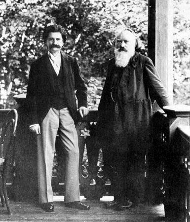

Brahms had become acquainted with Johann Strauss II, who was eight years his senior, in the 1870s, but their close friendship belongs to the years 1889 and after. Brahms admired much of Strauss's music, and encouraged the composer to sign up with his publisher Simrock. In autographing a fan for Strauss's wife Adele, Brahms wrote the opening notes of The Blue Danube waltz, adding the words "unfortunately not by Johannes Brahms".
After the successful Vienna premiere of his Second String Quintet, op. 111, in 1890, the 57-year-old Brahms came to think that he might retire from composition, telling a friend that he "had achieved enough; here I had before me a carefree old age and could enjoy it in peace." He also began to find solace in escorting the mezzo-soprano Alice Barbi and may have proposed to her (she was only 28). His admiration for Richard Mühlfeld, clarinettist with the Meiningen orchestra, revived his interest in composing and led him to write the Clarinet Trio, Op. 114 (1891); Clarinet Quintet, Op. 115 (1891); and the two Clarinet Sonatas, Op. 120 (1894). Brahms also wrote at this time his final cycles of piano pieces, Opp. 116–119 and the Vier ernste Gesänge (Four Serious Songs), Op. 121 (1896) which were prompted by the death of Clara Schumann and dedicated to the artist Max Klinger who was his great admirer. The last of the Eleven Chorale Preludes for organ, Op. 122 (1896) is a setting of "O Welt ich muss dich lassen" ("O world I must leave thee") and is the last notes that Brahms wrote. Many of these works were written in his house in Bad Ischl, where Brahms had first visited in 1882 and where he spent every summer from 1889 onwards.
In the summer of 1896 Brahms was diagnosed with jaundice, and later in the year his Viennese doctor diagnosed him with cancer of the liver (from which his father Jakob had died). His last public appearance was on 7 March 1897 when he saw Hans Richter conduct his Symphony No. 4; there was an ovation after each of the four movements. He made the effort, three weeks before his death, to attend the premiere of Johann Strauss's operetta Die Göttin der Vernunft (The Goddess of Reason) in March 1897. His condition gradually worsened and he died on 3 April 1897, in Vienna, aged 63. Brahms is buried in the Vienna Central Cemetery in Vienna, under a monument designed by Victor Horta with sculpture by Ilse von Twardowski.